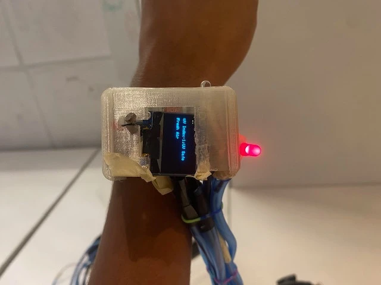
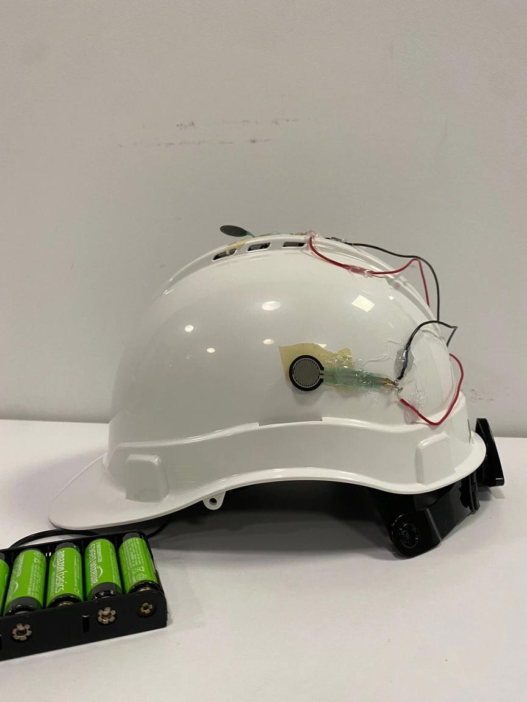

Embedded systems · Wearable prototyping
COGO: Wearable Safety Feedback for Construction Workers
Summary
Could a watch and helmet make basic hazard feedback easier to access on a construction site? With a student team, I developed COGO, an Arduino-based wearable prototype combining distance sensing, sound warnings, automatic lighting, and force-triggered helmet alerts. I wrote all of the project’s C++ firmware and helped with prototyping, 3D printing, and assembly. The project demonstrates how a compact interface can bring multiple sensor functions together, while highlighting the practical challenges of reliable sensing, wiring, and wearable design.
- FirmwareC++ implementation
- Watch + helmetPhysical prototype
- 3D printingEnclosure prototyping
- C++
- Arduino
- OLED
- Sensors
- 3D printing
- Prototyping
The prototype


Why this matters
Construction workers need information they can notice and act on while working. COGO explores bringing distance, noise, lighting, and impact feedback into a wearable interface, with simple visual and audible cues instead of requiring a separate screen for each task.
The engineering challenge was making multiple functions fit into something a person could wear. Building the physical prototype connected programming decisions to practical questions about enclosure size, wiring, sensor placement, and ease of use.
Development and collaborators
I wrote all of the code in the project’s GitHub repository, including the watch interface and sensor logic, helmet alerts, and supporting module sketches. I also helped prototype the device, work on the 3D-printed parts, and assemble the physical hardware.
I built COGO with Chimi Tshogay, Noa Weiss, Minul Gamage, and Jacob Mateo. Our mentors were Dr. Sameer Upadhye, Ishika Vaish, Kiruthiga Chandra Shekar, and Govind Nair. The team also interviewed a construction manager to gather feedback on the concept and its potential workplace use.
Hardware and firmware
The watch brings sensor readings and feedback onto a small OLED display. A separate helmet sketch reads force sensors and drives a buzzer. Supporting sketches explore accelerometer and Bluetooth modules.
Distance mode and display states
A button switches between ultrasonic distance measurement and the timed date, sensor, and pulse display states. The firmware uses a 50 ms debounce interval to reduce repeated input from a single press.
Light filtering and sound feedback
A 10-reading moving average smooths light readings. Separate low and high thresholds reduce light flicker near the switching point. On the sensor screen, raw sound readings trigger the warning LED and an ear-protection prompt.
Helmet impact feedback
The helmet reads three force sensors and uses thresholds to classify readings and activate a buzzer. These are prototype sensor thresholds, not calibrated injury or concussion measurements.
Designing around one button and a small display
The watch uses a 128 × 64 OLED. Distance mode gives the measurement its own screen; the other modes cycle through date, sensor information, and the pulse visualization. Separating those views keeps each display focused instead of placing every reading on one crowded screen.
The button handler waits 50 ms after an input change before accepting it. Display transitions use elapsed time, with different intervals for each view. These choices connect low-level input handling to whether the interface feels predictable.
Turning raw inputs into feedback
| Function | Implementation | Purpose |
|---|---|---|
| Distance | Ultrasonic pulse timing converted to inches | Give a direct measurement in a dedicated mode |
| Automatic light | 10-sample moving average and separate low/high switching thresholds | Reduce abrupt changes and flicker from noisy readings |
| Sound warning | Raw sensor threshold, LED, and text prompt on the sensor screen | Connect a local reading with a visible cue |
| Helmet alert | Three analog force inputs, threshold categories, and buzzer output | Explore local feedback when a sensor detects force |
These thresholds are prototype settings. Raw sound and force readings require calibration before they can be interpreted as occupational noise exposure or injury severity.
Building the enclosure alongside the code
I helped prototype the 3D-printed parts and assemble the hardware. That work made the relationship between software and physical design tangible: a button has to be reachable, a display has to remain visible, and the wiring and electronics have to fit the wearable form.
The assembled watch and helmet show the concept’s feasibility as a physical demonstration. External wiring and component size also show where a later iteration needs improvement. Smaller packaging, better strain relief, and more reliable sensors would make the next prototype easier to evaluate.
What I built and learned
A watch interface with multiple operating modes
The firmware combines ultrasonic distance measurement with a timed OLED interface. A debounced button switches modes, helping keep the controls simple.
Smoother lighting behavior
A 10-reading moving average filters light input, and separate on/off thresholds reduce flicker near the switching point. This turns noisy analog readings into more stable behavior.
Local sound and impact feedback
Sound readings drive an LED and ear-protection prompt on the sensor screen. The helmet’s three force sensors activate a buzzer and serial feedback through threshold logic.
A physical prototype informed by practical feedback
The team assembled a watch and helmet and interviewed a construction manager about the concept’s workplace use. The interview supplied feedback, rather than a controlled usability or safety trial.
The broader concept included wireless emergency notifications, more compact packaging, and waterproofing. Those remain future directions. COGO demonstrates a prototype architecture; its force thresholds are not calibrated concussion measurements, and its sound readings are not calibrated occupational noise measurements.
Lessons and next steps
The biggest lesson was that a convincing interface depends on reliable hardware. I had to think about noisy readings, button behavior, display timing, and how a user would switch tasks while wearing the device.
A next iteration would calibrate the sensors, reduce wiring and enclosure size, and keep sensor sampling active across every display mode. In the current watch sketch, distance mode returns early, bypassing the light and sound update logic. Controlled usability and durability testing would be needed before considering real construction-site use.